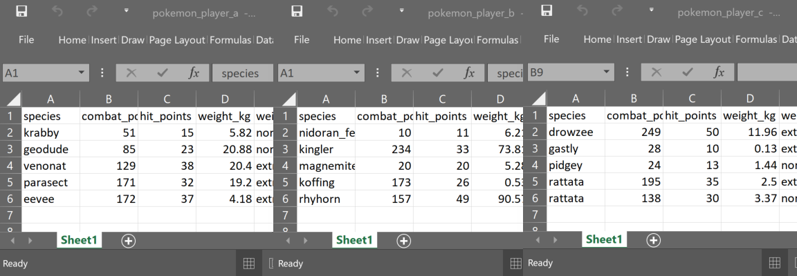
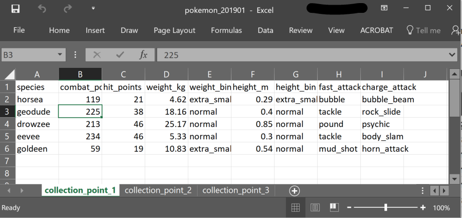
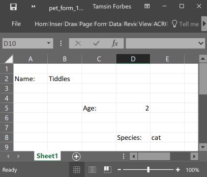
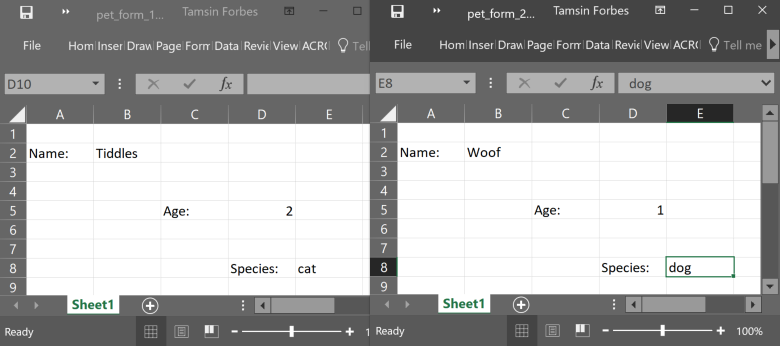
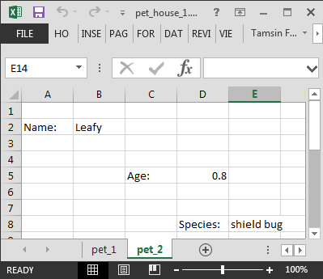
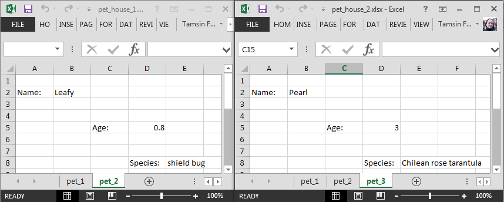

Chapter 4 Data Importing/Exporting and interaction with other programmes
This chapter is for code examples of data importing/exporting and interactions with other programmes and databases.
4.1 Libraries
library(tidyverse)
library(fs) #cross-platform file systems operations (based on libuv C library)
library(knitr) #general purpose tool for dynamic report generation in R
library(kableExtra) #presentation of complex tables with customizable styles
library(DT) #presentation of tables (wrapper of JavaScript library DataTables)
library(DBI) #database connection
library(dbplyr) #database connection
library(haven) #for importing/exporting SPSS, Stata, and SAS files
library(bigrquery) #connecting to GCP BigQuery4.3 .rds
.rds is R’s native file format, any object you create in R can be saved as a .rds file. The functions readRDS and saveRDS are base R functions.
#not run
saveRDS(
object = my_model #specify the R object you want to save
, file = "2019_0418_my_model.rds" #give it a name, don't forget the file extension
)4.4 .csv
We use the functions read_csv and write_csv from the {readr} package (which is part of the {tidyverse}). These are a little bit cleverer than their base counterparts, however, this cleverness can catch you out.
The file messy_pokemon_data.csv contains pokemon go captures data which has been deliberately messed up a bit. read_csv imputes the column specification from the first 1000 rows, which is fine if your first 1000 rows are representative of the data type. If not then subsequent data that can’t be coerced into the imputed data type will be replaced with NA.
Looking at the column specification below notice that read_csv has recognised time_first_capture as a time type, but not date_first_capture as date type. Given the information that combat_power should be numeric we can see that something is also amiss here as read_csv has guessed character type for this column.
pokemon <- readr::read_csv(
file = "data/messy_pokemon_data.csv"
)## Rows: 696 Columns: 11
## ── Column specification ────────────────────────────────────────────────────────
## Delimiter: ","
## chr (7): species, combat_power, weight_bin, height_bin, fast_attack, charge...
## dbl (3): hit_points, weight_kg, height_m
## time (1): time_first_capture
##
## ℹ Use `spec()` to retrieve the full column specification for this data.
## ℹ Specify the column types or set `show_col_types = FALSE` to quiet this message.Let’s have a quick look at some data from these columns
pokemon %>%
dplyr::select(species, combat_power, date_first_capture, time_first_capture) %>%
dplyr::arrange(desc(combat_power)) %>%
head()| species | combat_power | date_first_capture | time_first_capture |
|---|---|---|---|
| electabuzz | P962 | 29/04/2001 | 08:20:10 |
| pidgey | P95 | 27/11/1969 | 21:59:32 |
| drowzee | P613 | 18/07/1968 | 10:36:38 |
| bulbasaur | P577 | 17 June 1997 | 09:17:17 |
| drowzee | P542 | 04/07/1928 | 21:54:04 |
| drowzee | P518 | 06/09/1950 | 17:01:18 |
The pokemon dataset has less than 1000 rows so read_csv has ‘seen’ the letters mixed in with some of the numbers in the combat_power column. It has guessed at character type because everything it has read in the column can be coerced to character type.
What if there are more than 1000 rows? For example, say you have a numeric column, but there are some letters prefixed to the numbers in some of the post-row-1000 rows. These values are still meaningful to you, and with some data wrangling you can extract the actual numbers. Unfortunately read_csv has guessed at type double based on the first 1000 rows and since character type cannot be coerced into double, these values will be replaced with NA. If you have messy data like this the best thing to do is to force read_csv to read in as character type to preserve all values as they appear, you can then sort out the mess yourself.
You can specify the column data type using the col_types argument. Below I have used a compact string of abbreviations (c = character, d = double, D = date, t = time) to specify the column types, see the help at ?read_csv or the {readr} vignette for the full list. You can see I got many parsing failures, which I can access with problems(), which is a data frame of the values that read_csv was unable to coerce into the type I specified, and so has replaced with NA.
pokemon <- readr::read_csv(
file = "data/messy_pokemon_data.csv"
, col_types = "cdddcdcccDt"
)## Warning: One or more parsing issues, call `problems()` on your data frame for details,
## e.g.:
## dat <- vroom(...)
## problems(dat)# c = character, d = double, D = Date, t = time
tibble::glimpse(pokemon)## Rows: 696
## Columns: 11
## $ species <chr> "abra", "abra", "bellsprout", "bellsprout", "bellsp…
## $ combat_power <dbl> 101, 81, 156, 262, 389, 433, 628, 161, 135, 420, 12…
## $ hit_points <dbl> 20, 16, 32, 44, 50, 59, 68, 33, 29, 51, 26, 60, 15,…
## $ weight_kg <dbl> 17.18, 25.94, 5.85, 5.42, 3.40, 6.67, 3.84, 1.13, 1…
## $ weight_bin <chr> "normal", "extra_large", "extra_large", "extra_larg…
## $ height_m <dbl> 0.85, 1.00, 0.80, 0.82, 0.66, 0.84, 0.78, 0.39, 0.8…
## $ height_bin <chr> "normal", "normal", "normal", "normal", "normal", "…
## $ fast_attack <chr> "zen_headbutt", "zen_headbutt", "acid", "acid", "vi…
## $ charge_attack <chr> "shadow_ball", "shadow_ball", "sludge_bomb", "sludg…
## $ date_first_capture <date> NA, NA, NA, NA, NA, NA, NA, NA, NA, NA, NA, NA, NA…
## $ time_first_capture <time> 20:59:33, 10:18:40, 08:06:55, 11:18:28, 21:11:42, …Let’s take a look at the problems.
problems(pokemon) %>%
head()| row | col | expected | actual | file |
|---|---|---|---|---|
| 2 | 10 | date in ISO8601 | 31 May 1977 | /home/runner/work/R-cookbook/R-cookbook/data/messy_pokemon_data.csv |
| 3 | 10 | date in ISO8601 | 24 February 1973 | /home/runner/work/R-cookbook/R-cookbook/data/messy_pokemon_data.csv |
| 4 | 10 | date in ISO8601 | 21 June 1924 | /home/runner/work/R-cookbook/R-cookbook/data/messy_pokemon_data.csv |
| 5 | 10 | date in ISO8601 | 01 August 1925 | /home/runner/work/R-cookbook/R-cookbook/data/messy_pokemon_data.csv |
| 6 | 10 | date in ISO8601 | 06 August 1952 | /home/runner/work/R-cookbook/R-cookbook/data/messy_pokemon_data.csv |
| 7 | 10 | date in ISO8601 | 17 January 1915 | /home/runner/work/R-cookbook/R-cookbook/data/messy_pokemon_data.csv |
And since I know that there are problems with combat_power let’s take a look there.
problems(pokemon) %>%
dplyr::filter(col == "combat_power") %>%
head()| row | col | expected | actual | file |
|---|---|---|---|---|
The problems() feature in read_csv is super useful, it helps you isolate the problem data so you can fix it.
Other arguments within read_csv that I will just mention, with their default settings are
col_names = TRUE: the first row on the input is used as the column names.na = c("", "NA"): the default values to interpret asNA.trim_ws = TRUE: by default trims leading/trailing white space.skip = 0: number of lines to skip before reading data.guess_max = min(1000, n_max): maximum number of records to use for guessing column type. NB the bigger this is the longer it will take to read in the data.
4.5 .xlsx and .xls
Excel workbooks come in many shapes and sizes. You may have one or many worksheets in one or many workbooks, there may only be certain cells that you are interested in. Below are a few examples of how to cope with these variations using functions from {readxl} and {purrr} to iterate over either worksheets and/or workbooks, the aim being to end up with all the data in a single tidy dataframe.
4.5.1 Single worksheet - single workbook
The simplest combination, you are interested in one rectangular dataset in a particular worksheet in one workbook. Leaving the defaults works fine on this dataset. Note that readxl::read_excel detects if the file is .xlsx or .xls and behaves accordingly.
readxl::read_excel(path = "data/port0499.xlsx") %>%
head()| year | polu_majorport | polu_region | direction | cargo_group | cargo_category | cargo_description | tonnage | units |
|---|---|---|---|---|---|---|---|---|
| 2000 | Aberdeen | Africa (excl. Mediterranean) | Inwards | Other General Cargo | 92 | Iron and steel products | 1.153177 | 0 |
| 2000 | Aberdeen | Africa (excl. Mediterranean) | Outwards | Other General Cargo | 92 | Iron and steel products | 2.406102 | 0 |
| 2000 | Aberdeen | Africa (excl. Mediterranean) | Outwards | Other General Cargo | 99 | Other general cargo & containers <20’ | 3.664545 | 0 |
| 2000 | Aberdeen | America | Inwards | Other General Cargo | 91 | Forestry products | 108.771082 | 0 |
| 2000 | Aberdeen | America | Inwards | Other General Cargo | 92 | Iron and steel products | 11.045082 | 0 |
| 2000 | Aberdeen | America | Outwards | Other General Cargo | 99 | Other general cargo & containers <20’ | 12.397106 | 0 |
Let’s set a few of the other arguments, run ?read_excel in the console to see the full list.
readxl::read_excel(
path = "data/port0499.xlsx"
, sheet = 1 #number or name of sheet, default is first sheet
, col_names = TRUE #default
, col_types = "text" #a single type will recycle to all columns, specify each using character vector of the same length eg c("numeric", "text", ...)
) %>%
head()| year | polu_majorport | polu_region | direction | cargo_group | cargo_category | cargo_description | tonnage | units |
|---|---|---|---|---|---|---|---|---|
| 2000 | Aberdeen | Africa (excl. Mediterranean) | Inwards | Other General Cargo | 92 | Iron and steel products | 1.15317721340056 | 0 |
| 2000 | Aberdeen | Africa (excl. Mediterranean) | Outwards | Other General Cargo | 92 | Iron and steel products | 2.4061025320368699 | 0 |
| 2000 | Aberdeen | Africa (excl. Mediterranean) | Outwards | Other General Cargo | 99 | Other general cargo & containers <20’ | 3.6645448610128639 | 0 |
| 2000 | Aberdeen | America | Inwards | Other General Cargo | 91 | Forestry products | 108.771081940982 | 0 |
| 2000 | Aberdeen | America | Inwards | Other General Cargo | 92 | Iron and steel products | 11.045081750930599 | 0 |
| 2000 | Aberdeen | America | Outwards | Other General Cargo | 99 | Other general cargo & containers <20’ | 12.397106259006 | 0 |
4.5.2 Single worksheet - many workbooks
For example, you collect pokemon go capture data from many different players, the data all has the same structure and you want to read it in and row bind into a single dataframe in R.
knitr::include_graphics("image/pokemon_player.png")
The code below collects the names of the 3 excel workbooks using fs::dir_ls, and, as these are not the only files in that folder, I’ve specified them using regular expressions (regex). Then we use purrr::map_dfr to iterate and rowbind over this list of files, applying the function we supply, that is readxl::read_excel. Since we are only reading a single worksheet per workbook we don’t need to supply any arguments to readxl:read_excel, the defaults will work fine, each workbook path is piped in, in turn. The .id argument in purrr:map_dfr adds the file path into a new column, which we have named “player” in this instance. The “dfr” in map_dfr refers to the output “data-frame-rowbound”.
pokemon <- fs::dir_ls(path = "data", regex = "pokemon_player_.\\.xlsx$") %>%
purrr::map_dfr(.f = readxl::read_excel, .id = "player")
tibble::glimpse(pokemon)## Rows: 15
## Columns: 10
## $ player <chr> "data/pokemon_player_a.xlsx", "data/pokemon_player_a.xls…
## $ species <chr> "krabby", "geodude", "venonat", "parasect", "eevee", "ni…
## $ combat_power <dbl> 51, 85, 129, 171, 172, 10, 234, 20, 173, 157, 249, 28, 2…
## $ hit_points <dbl> 15, 23, 38, 32, 37, 11, 33, 20, 26, 49, 50, 10, 13, 35, …
## $ weight_kg <dbl> 5.82, 20.88, 20.40, 19.20, 4.18, 6.21, 73.81, 5.28, 0.53…
## $ weight_bin <chr> "normal", "normal", "extra_small", "extra_small", "extra…
## $ height_m <dbl> 0.36, 0.37, 0.92, 0.87, 0.25, 0.36, 1.52, 0.30, 0.49, 0.…
## $ height_bin <chr> "normal", "normal", "normal", "normal", "normal", "norma…
## $ fast_attack <chr> "mud_shot", "rock_throw", "confusion", "bug_bite", "tack…
## $ charge_attack <chr> "vice_grip", "rock_tomb", "poison_fang", "x-scissor", "b…Using DT::datatable for ease of viewing we can see that all 5 rows of data from each of the 3 workbooks has been read in, rowbound, and an id column has been added showing the workbook path.
DT::datatable(data = pokemon)Note that the regex argument in fs::dir_ls is applied to the full file path so if I had tried to specify that the file name starts with “pokemon” by front anchoring it using “^pokemon” this would return no results, since the full name is actually “data/pokemon…”. Helpful regex links below.
4.5.3 Many worksheets - single workbook
You have a single workbook, but it contains many worksheets of interest, each containing rectangular data with the same structure. For example, you have a workbook containing pokemon go captures data, where each different data collection point has its own sheet. The data structure, column names and data types are consistent. You want to read in and combine these data into a single dataframe.
The code below sets the location of the workbook and puts this in the object path. It then collects the names of all the sheets in that workbook using readxl::excel_sheets. Next purrr::set_names sets these names in a vector so that they can be used in the next step. This vector of names is implicitly assigned to the .x argument in purrr::map_dfr as it is the first thing passed to it. This means we can refer to it as .x in the function we are iterating, in this case readxl::read_excel. Finally, an id column is included, made up of the sheet names and named “sheet”. The output is a single dataframe with all the sheets row bound together.
path <- "data/multi_tab_messy_pokemon_data.xlsx"
pokemon_collections <- readxl::excel_sheets(path = path) %>%
purrr::set_names() %>%
purrr::map_dfr(
~ readxl::read_excel(path = path, sheet = .x)
, .id = "sheet"
)
DT::datatable(data = pokemon_collections)4.5.4 Many worksheets - many workbooks
Now we can use the above two solutions to combine data from many worksheets spread across many workbooks. As before, the data is rectangular and has the same structure. For example, you receive a workbook every month, containing pokemon go captures data, and each data collection point has its own sheet.
knitr::include_graphics("image/pokemon_collection_point.png")
We create a function to import and combine the sheets from a single workbook, and then iterate this function over all the workbooks using purrr::map_df.
#function to combine sheets from a single workbook
read_and_combine_sheets <- function(path){
readxl::excel_sheets(path = path) %>%
purrr::set_names() %>%
purrr::map_df(
~ readxl::read_excel(path = path, sheet = .x)
, .id = "sheet"
)
}
#code to iterate over many workbooks
pokemon_monthly_collections <- fs::dir_ls(
path = "data", regex = "pokemon_2019\\d{2}\\.xlsx$") %>%
purrr::map_df(
read_and_combine_sheets
, .id = "month"
)
DT::datatable(data = pokemon_monthly_collections)4.5.5 Non-rectangular data - single worksheet - single workbook
You have received some kind of data entry form that has been done in excel in a more human readable, rather than machine readable, format. Some of the cells contain instructions and admin data so you only want the data held in specific cells. This is non-rectangular data, that is, the data of interest is dotted all over the place. In this example we have pet forms, and the data of interest is in cells B2, D5 and E8 only.
Here’s an image of what the data looks like.
knitr::include_graphics("image/pet_form.png")
Let’s see what we get if we naively try to read it in.
readxl::read_excel(
path = "data/pet_form_1.xlsx"
) %>%
knitr::kable() %>%
kableExtra::kable_styling(full_width = F, position = "left")| Name: | Tiddles | …3 | …4 | …5 |
|---|---|---|---|---|
| NA | NA | NA | NA | NA |
| NA | NA | NA | NA | NA |
| NA | NA | Age: | 2 | NA |
| NA | NA | NA | NA | NA |
| NA | NA | NA | NA | NA |
| NA | NA | NA | Species: | cat |
It’s not what we wanted, let’s try again, now using the range argument
readxl::read_excel(
path = "data/pet_form_1.xlsx"
, col_names = FALSE
, range = "A2:B2"
) %>%
knitr::kable() %>%
kableExtra::kable_styling(full_width = F, position = "left")| …1 | …2 |
|---|---|
| Name: | Tiddles |
The range argument helps, we have picked up one bit of the data, and its name. The range argument uses the {cellranger} package which allows you to refer to ranges in Excel files in Excel style. However, we have 3 disconnected data points, we need to iterate, so it’s {purrr} to the rescue once more.
The code below demonstrates explicitly that the .x argument in purrr::map_dfr takes the vector of things that will be iterated over in the supplied function. In this case we are giving the range argument of readxl::read_excel three individual cells to iterate over. These will then be rowbound so we end up with a single dataframe comprising a single column, named “cells”, containing 3 rows.
pet_details <- purrr::map_dfr(
.x = c("B2", "D5", "E8")
, ~ readxl::read_excel(
path = "data/pet_form_1.xlsx"
, range = .x
, col_names = "cells" #assign name
, col_types = "text" #have to use text to preserve all data in single column
)
)
pet_details %>%
knitr::kable() %>%
kableExtra::kable_styling(full_width = F, position = "left")| cells |
|---|
| Tiddles |
| 2 |
| cat |
This is an improvement, we have a dataframe named pet_details comprising a single “cells” column, which contains all the relevant data from this worksheet.
We could now try to reshape it, however, a better idea is to use map_dfc since we actually want to column bind these data rather than rowbind them. The read out from tibble::glimpse shows that the different variable types have been picked up, which is also helpful. The default naming of the columns gives a clue as to how the function works.
pet_details <- purrr::map_dfc(
.x = c("B2", "D5", "E8") #vector of specific cells containing the data
, ~ readxl::read_excel(
path = "data/pet_form_1.xlsx"
, range = .x
, col_names = FALSE
)
)## New names:
## New names:
## New names:
## New names:
## • `` -> `...1`tibble::glimpse(pet_details)## Rows: 1
## Columns: 3
## $ ...1 <chr> "Tiddles"
## $ ...2 <dbl> 2
## $ ...3 <chr> "cat"| …1 | …2 | …3 |
|---|---|---|
| Tiddles | 2 | cat |
This is pretty close to what we want, the only sticking point is that we still don’t have the correct column names. We could deal with this using dplyr::rename, but an even better idea is to use purrr::map2_dfc. The map2 variant allows you to iterate over two arguments simultaneously (into the same function).
pet_details_2 <- purrr::map2_dfc(
.x = c("B2", "D5", "E8") #vector of specific data cells
, .y = c("Name", "Age", "Species") #vector of column names
, ~ readxl::read_excel(
path = "data/pet_form_1.xlsx"
, range = .x
, col_names = .y
)
)
tibble::glimpse(pet_details_2)## Rows: 1
## Columns: 3
## $ Name <chr> "Tiddles"
## $ Age <dbl> 2
## $ Species <chr> "cat"| Name | Age | Species |
|---|---|---|
| Tiddles | 2 | cat |
4.5.6 Non-rectangular data - single worksheet - many workbooks
Having solved for one workbook and worksheet, we can functionalise and iterate to gather the data from every workbook, two of which are shown below.
knitr::include_graphics("image/pet_forms.png")
The function cells_to_rows below iterates over read_excel reading each of the three cells from the worksheet, applying the corresponding column name as it goes. It takes three character or character vector inputs, path, cells, and col_names.
cells_to_rows <- function(path, cells, col_names){
purrr::map2_dfc(
.x = cells
, .y = col_names
, ~ readxl::read_excel(
path = path
, range = .x
, col_names = .y
)
)
}Let’s test it on the first pet form data, first setting the parameters to use in the function.
path <- "data/pet_form_1.xlsx"
cells <- c("B2", "D5", "E8")
col_names <- c("Name", "Age", "Species")
pet_form_1 <- cells_to_rows(
path = path, cells = cells, col_names = col_names
)| Name | Age | Species |
|---|---|---|
| Tiddles | 2 | cat |
It works! So now we can iterate this over all the pet form workbooks, specifying the paths using regex as before. Note below we use .x in the path argument in the cells_to_rows function to refer to the vector of paths piped to purrr::map_dfr from fs::dir_ls.
cells <- c("B2", "D5", "E8")
col_names <- c("Name", "Age", "Species")
all_pet_forms <- fs::dir_ls(
path = "data", regex = "pet_form_\\d\\.xlsx$") %>%
purrr::map_dfr(
~ cells_to_rows(path = .x, cells = cells, col_names = col_names)
, .id = "path"
)| path | Name | Age | Species |
|---|---|---|---|
| data/pet_form_1.xlsx | Tiddles | 2.0 | cat |
| data/pet_form_2.xlsx | Woof | 1.0 | dog |
| data/pet_form_3.xlsx | Hammy | 0.5 | hamster |
| data/pet_form_4.xlsx | Toothless | 3.0 | dragon |
4.5.7 Non-rectangular data - many worksheets - single workbook
Now we have more than one worksheet in a single workbook, and the data looks like this, the workbook is from a “pet house” and each worksheet is pet details.
knitr::include_graphics("image/pet_house.png")
To incorporate the worksheets element we rejig the cells_to_rows function from above and give it a “sheet” argument, so it can be passed a specific sheet.
sheet_cells_to_rows <- function(path, sheet, cells, col_names){
purrr::map2_dfc(
.x = cells
, .y = col_names
, ~ readxl::read_excel(
path = path
, sheet = sheet
, range = .x
, col_names = .y
)
)
}We now have the function sheet_cells_to_rows that can accept a list of worksheet names. As before we use readxl::excel_sheets to collect the worksheet names, first setting the other parameters
path <- "data/pet_house_1.xlsx"
cells <- c("B2", "D5", "E8")
col_names <- c("Name", "Age", "Species")
pet_house_1 <- readxl::excel_sheets(path = path) %>%
purrr::set_names() %>%
purrr::map_dfr(
~ sheet_cells_to_rows(path = path
, sheet = .x
, cells = cells
, col_names = col_names)
, .id = "sheet"
) 4.5.8 Non-rectangular data - many worksheets - many workbooks
Finally we have many workbooks each containing many worksheets, each containing many cells, as before we want to read them in and combine.
knitr::include_graphics("image/pet_houses.png")
We could functionalise the code above that reads and combines the cells in many worksheets from a single workbook, but an alternative approach is used below. We create an anonymous function and use that on the fly. This is useful if the function is a one off, and not too complicated. The anonymous function below still depends on the sheet_cells_to_rows we created earlier though.
cells <- c("B2", "D5", "E8")
col_names <- c("Name", "Age", "Species")
pet_house_all <- fs::dir_ls(
path = "data", regex = "pet_house_\\d\\.xlsx$") %>%
purrr::map_dfr(
function(path){
readxl::excel_sheets(path = path) %>%
purrr::set_names() %>%
purrr::map_dfr(
~ sheet_cells_to_rows(path = path
, sheet = .x
, cells = cells
, col_names = col_names)
, .id = "sheet"
)
}
, .id = "path"
)| path | sheet | Name | Age | Species |
|---|---|---|---|---|
| data/pet_house_1.xlsx | pet_1 | Tiddles | 2.0 | cat |
| data/pet_house_1.xlsx | pet_2 | Leafy | 0.8 | shield bug |
| data/pet_house_2.xlsx | pet_1 | Tuuli | 8.0 | tiger |
| data/pet_house_2.xlsx | pet_2 | Sophie | 4.0 | cheetah |
| data/pet_house_2.xlsx | pet_3 | Pearl | 3.0 | Chilean rose tarantula |
4.9 GCP
4.9.1 BigQuery
Digital guidance on how to use {bigrquery} to interact with GCP’s BigQuery
4.9.2 Google Cloud Storage
Digital guidance on how to connect to GCS using R.